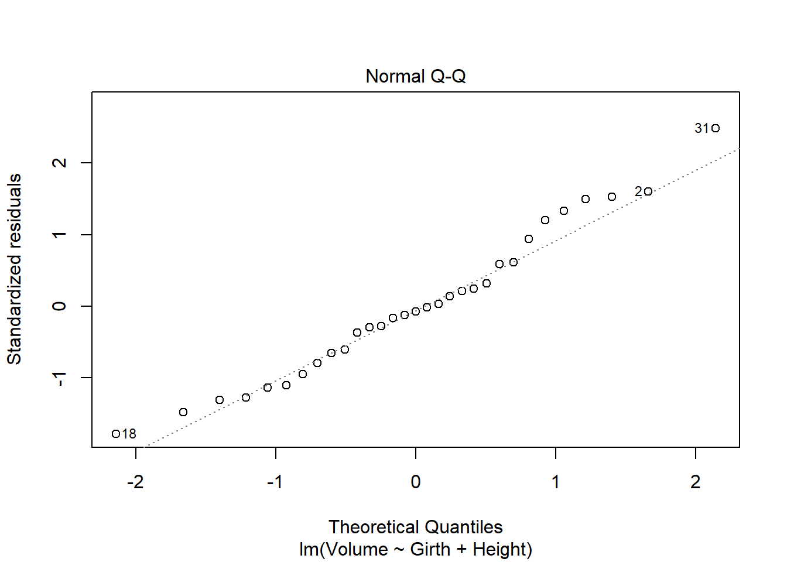
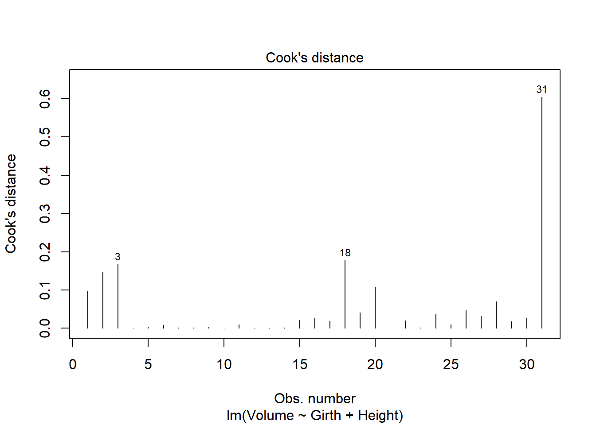
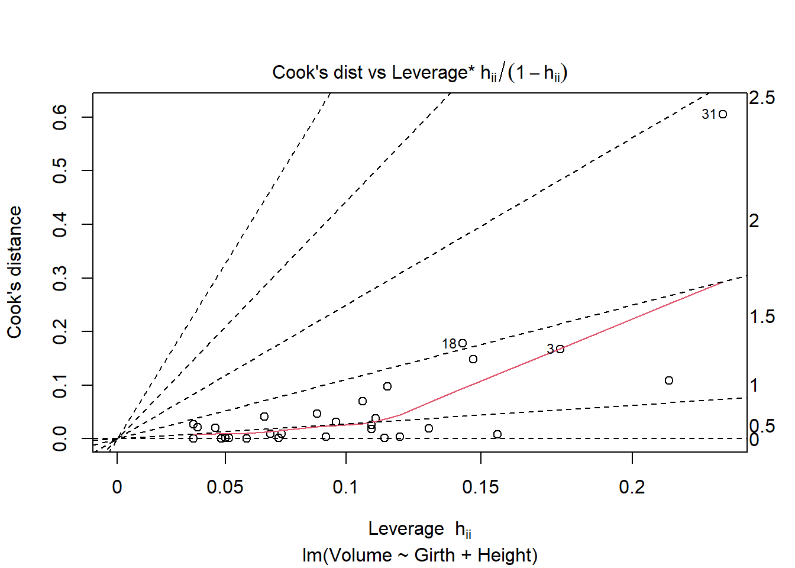
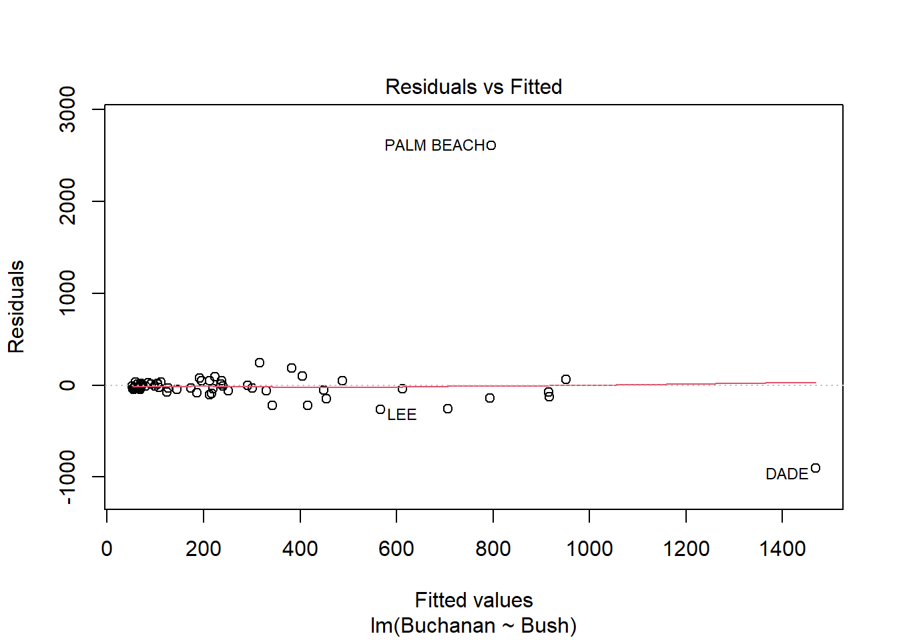
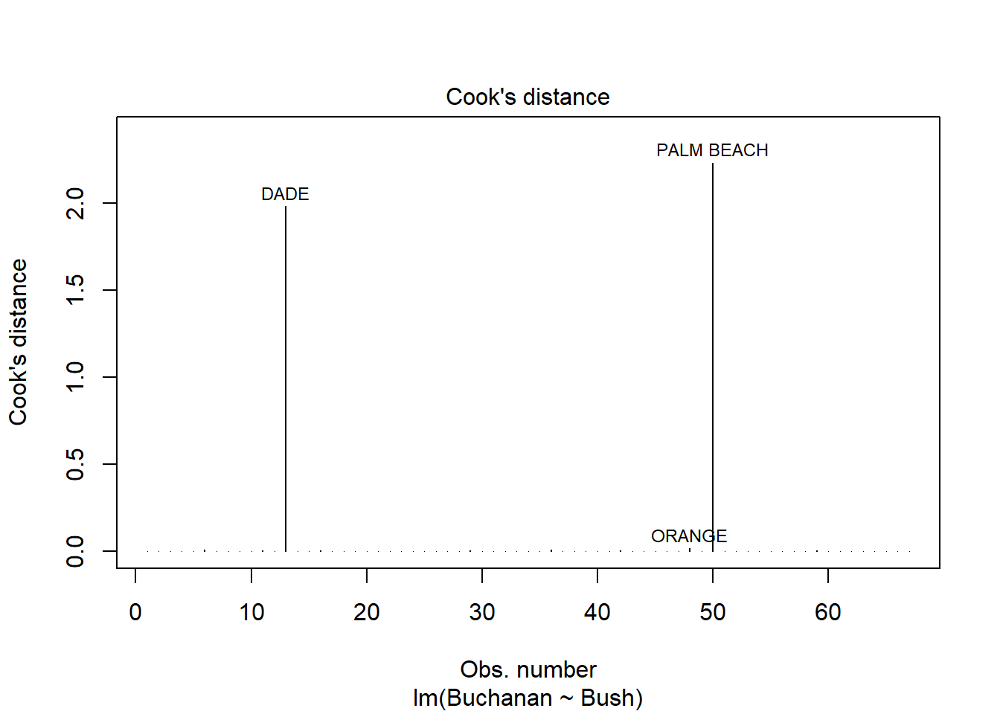
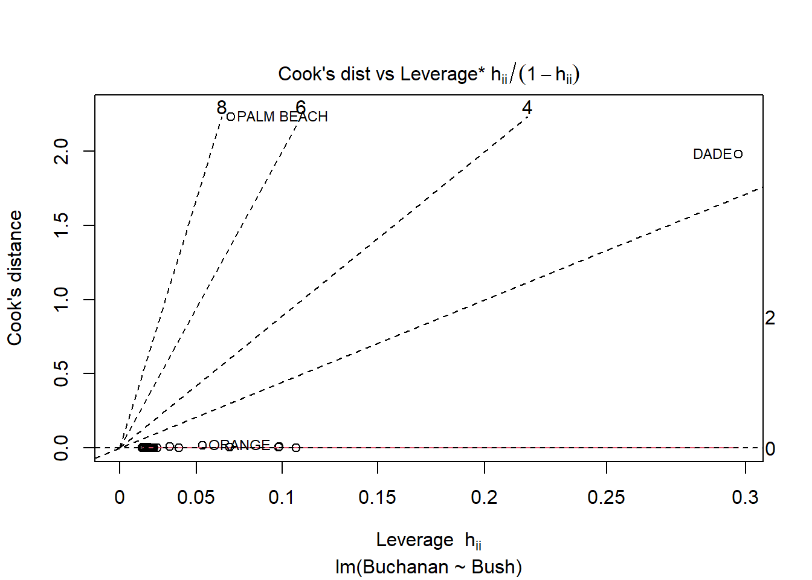
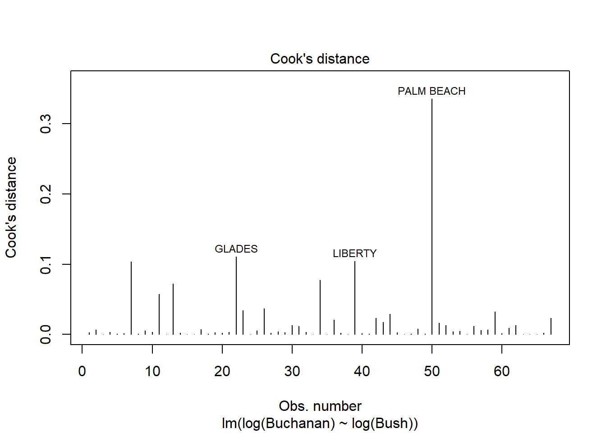
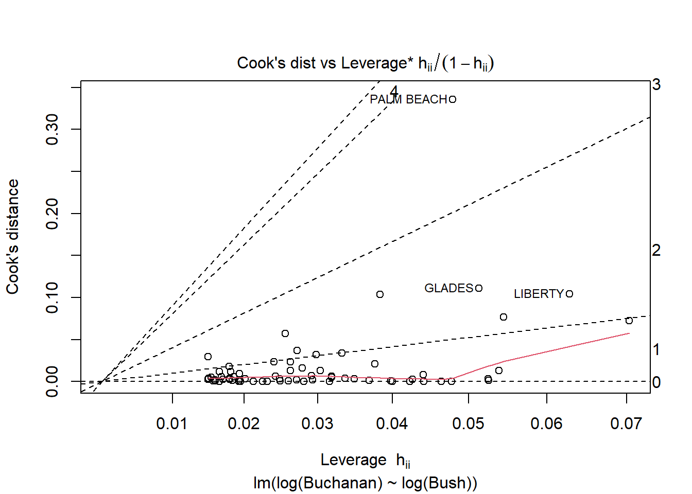

Code
library(tidyverse)
library(AER)
library(stargazer)Error in library(stargazer): there is no package called 'stargazer'Code
knitr::opts_chunk$set(echo = TRUE)library(tidyverse)
library(AER)
library(stargazer)Error in library(stargazer): there is no package called 'stargazer'knitr::opts_chunk$set(echo = TRUE)library(smss)
data('house.selling.price.2', package = 'smss')summary(house.selling.price.2) P S Be Ba
Min. : 17.50 Min. :0.40 Min. :1.000 Min. :1.000
1st Qu.: 72.90 1st Qu.:1.33 1st Qu.:3.000 1st Qu.:2.000
Median : 96.00 Median :1.57 Median :3.000 Median :2.000
Mean : 99.53 Mean :1.65 Mean :3.183 Mean :1.957
3rd Qu.:115.00 3rd Qu.:1.98 3rd Qu.:4.000 3rd Qu.:2.000
Max. :309.40 Max. :3.85 Max. :5.000 Max. :3.000
New
Min. :0.0000
1st Qu.:0.0000
Median :0.0000
Mean :0.3011
3rd Qu.:1.0000
Max. :1.0000 tibble(house.selling.price.2)# A tibble: 93 × 5
P S Be Ba New
<dbl> <dbl> <int> <int> <int>
1 48.5 1.1 3 1 0
2 55 1.01 3 2 0
3 68 1.45 3 2 0
4 137 2.4 3 3 0
5 309. 3.3 4 3 1
6 17.5 0.4 1 1 0
7 19.6 1.28 3 1 0
8 24.5 0.74 3 1 0
9 34.8 0.78 2 1 0
10 32 0.97 3 1 0
# … with 83 more rowscor(house.selling.price.2) P S Be Ba New
P 1.0000000 0.8988136 0.5902675 0.7136960 0.3565540
S 0.8988136 1.0000000 0.6691137 0.6624828 0.1762879
Be 0.5902675 0.6691137 1.0000000 0.3337966 0.2672091
Ba 0.7136960 0.6624828 0.3337966 1.0000000 0.1820651
New 0.3565540 0.1762879 0.2672091 0.1820651 1.0000000lm(P ~ S + Be + Ba + New, data = house.selling.price.2) |> summary()
Call:
lm(formula = P ~ S + Be + Ba + New, data = house.selling.price.2)
Residuals:
Min 1Q Median 3Q Max
-36.212 -9.546 1.277 9.406 71.953
Coefficients:
Estimate Std. Error t value Pr(>|t|)
(Intercept) -41.795 12.104 -3.453 0.000855 ***
S 64.761 5.630 11.504 < 2e-16 ***
Be -2.766 3.960 -0.698 0.486763
Ba 19.203 5.650 3.399 0.001019 **
New 18.984 3.873 4.902 4.3e-06 ***
---
Signif. codes: 0 '***' 0.001 '**' 0.01 '*' 0.05 '.' 0.1 ' ' 1
Residual standard error: 16.36 on 88 degrees of freedom
Multiple R-squared: 0.8689, Adjusted R-squared: 0.8629
F-statistic: 145.8 on 4 and 88 DF, p-value: < 2.2e-16Using backward elimination Beds would be eliminated first as it is the variable with the largest p-value.
If we employ forward selection, as the variables with the lowest p-value, New or Size would be selected first.
Bed’s large p-value may be due to its high correlation with Size and therefore not statistically significant on its own as the two variables are multicollinear.
R2 - Using R squared and backward elimination the model below should be selected as it results in the greatest R squared score.
lm(P ~ S + Be + Ba + New, data = house.selling.price.2) |> summary()
Call:
lm(formula = P ~ S + Be + Ba + New, data = house.selling.price.2)
Residuals:
Min 1Q Median 3Q Max
-36.212 -9.546 1.277 9.406 71.953
Coefficients:
Estimate Std. Error t value Pr(>|t|)
(Intercept) -41.795 12.104 -3.453 0.000855 ***
S 64.761 5.630 11.504 < 2e-16 ***
Be -2.766 3.960 -0.698 0.486763
Ba 19.203 5.650 3.399 0.001019 **
New 18.984 3.873 4.902 4.3e-06 ***
---
Signif. codes: 0 '***' 0.001 '**' 0.01 '*' 0.05 '.' 0.1 ' ' 1
Residual standard error: 16.36 on 88 degrees of freedom
Multiple R-squared: 0.8689, Adjusted R-squared: 0.8629
F-statistic: 145.8 on 4 and 88 DF, p-value: < 2.2e-16Adjusted R2 - The model without Bed included is preferred if considering adjusted R squared in backward elimiation instead.
lm(P ~ S + Ba + New, data = house.selling.price.2) |> summary()
Call:
lm(formula = P ~ S + Ba + New, data = house.selling.price.2)
Residuals:
Min 1Q Median 3Q Max
-34.804 -9.496 0.917 7.931 73.338
Coefficients:
Estimate Std. Error t value Pr(>|t|)
(Intercept) -47.992 8.209 -5.847 8.15e-08 ***
S 62.263 4.335 14.363 < 2e-16 ***
Ba 20.072 5.495 3.653 0.000438 ***
New 18.371 3.761 4.885 4.54e-06 ***
---
Signif. codes: 0 '***' 0.001 '**' 0.01 '*' 0.05 '.' 0.1 ' ' 1
Residual standard error: 16.31 on 89 degrees of freedom
Multiple R-squared: 0.8681, Adjusted R-squared: 0.8637
F-statistic: 195.3 on 3 and 89 DF, p-value: < 2.2e-16PRESS - Using the PRESS method the model with all variables except Bed is also preferred as that model results in the lowest PRESS score of 27860.05.
library(MPV)Error in library(MPV): there is no package called 'MPV'mod<-lm(P ~ S + Be + Ba + New, data = house.selling.price.2)
mod1<-lm(P ~ S + Ba + New, data = house.selling.price.2)
mod2<-lm(P ~ S + New, data = house.selling.price.2)
mod3<-lm(P ~ S + New, data = house.selling.price.2)
mod4<-lm(P ~ S, data = house.selling.price.2)
PRESS(mod)Error in PRESS(mod): could not find function "PRESS"PRESS(mod1)Error in PRESS(mod1): could not find function "PRESS"PRESS(mod2)Error in PRESS(mod2): could not find function "PRESS"PRESS(mod3)Error in PRESS(mod3): could not find function "PRESS"PRESS(mod4)Error in PRESS(mod4): could not find function "PRESS"AIC - The model with all variables but Bed, as the model with the lowest AIC score of 789.14, is preferred.
AIC(mod)[1] 790.6225AIC(mod1)[1] 789.1366AIC(mod2)[1] 800.1262AIC(mod3)[1] 800.1262AIC(mod4)[1] 820.1439BIC - The model with all variables but Bed, as the model with the lowest BIC score of 801.80, is preferred.
BIC(mod)[1] 805.8181BIC(mod1)[1] 801.7996BIC(mod2)[1] 810.2566BIC(mod3)[1] 810.2566BIC(mod4)[1] 827.7417I prefer the model with all variables except Bed. Tests using adjusted R squared, PRESS, AIC, and BIC as predictors all indicate this model has the greatest comparative predictive power.
summary(trees) Girth Height Volume
Min. : 8.30 Min. :63 Min. :10.20
1st Qu.:11.05 1st Qu.:72 1st Qu.:19.40
Median :12.90 Median :76 Median :24.20
Mean :13.25 Mean :76 Mean :30.17
3rd Qu.:15.25 3rd Qu.:80 3rd Qu.:37.30
Max. :20.60 Max. :87 Max. :77.00 tibble(trees)# A tibble: 31 × 3
Girth Height Volume
<dbl> <dbl> <dbl>
1 8.3 70 10.3
2 8.6 65 10.3
3 8.8 63 10.2
4 10.5 72 16.4
5 10.7 81 18.8
6 10.8 83 19.7
7 11 66 15.6
8 11 75 18.2
9 11.1 80 22.6
10 11.2 75 19.9
# … with 21 more rowslm(Volume ~ Girth + Height, data = trees)|> summary()
Call:
lm(formula = Volume ~ Girth + Height, data = trees)
Residuals:
Min 1Q Median 3Q Max
-6.4065 -2.6493 -0.2876 2.2003 8.4847
Coefficients:
Estimate Std. Error t value Pr(>|t|)
(Intercept) -57.9877 8.6382 -6.713 2.75e-07 ***
Girth 4.7082 0.2643 17.816 < 2e-16 ***
Height 0.3393 0.1302 2.607 0.0145 *
---
Signif. codes: 0 '***' 0.001 '**' 0.01 '*' 0.05 '.' 0.1 ' ' 1
Residual standard error: 3.882 on 28 degrees of freedom
Multiple R-squared: 0.948, Adjusted R-squared: 0.9442
F-statistic: 255 on 2 and 28 DF, p-value: < 2.2e-16Based on the residual vs fitted and normal Q-Q plots this regression model does not meet the linearity assumption. Additionally the trend line in the scale-location plot indicates non-constant variance.
fit = lm(Volume ~ Girth + Height, data = trees)
plot(fit, which = 1:6)





library(alr4) Loading required package: effectslattice theme set by effectsTheme()
See ?effectsTheme for details.data('florida', package = 'alr4')
summary(florida) Gore Bush Buchanan
Min. : 788 Min. : 1316 Min. : 9.0
1st Qu.: 3055 1st Qu.: 4746 1st Qu.: 46.5
Median : 14152 Median : 20196 Median : 114.0
Mean : 43341 Mean : 43356 Mean : 258.5
3rd Qu.: 45974 3rd Qu.: 56542 3rd Qu.: 285.5
Max. :386518 Max. :289456 Max. :3407.0 tibble(florida)# A tibble: 67 × 3
Gore Bush Buchanan
<int> <int> <int>
1 47300 34062 262
2 2392 5610 73
3 18850 38637 248
4 3072 5413 65
5 97318 115185 570
6 386518 177279 789
7 2155 2873 90
8 29641 35419 182
9 25501 29744 270
10 14630 41745 186
# … with 57 more rowsBased on the linear regression and plots below, Palm Beach is an outlier. The Cook’s distance for Palm Beach is larger than 1 indicating an influential observation.
lm(Buchanan ~ Bush, data = florida)|> summary()
Call:
lm(formula = Buchanan ~ Bush, data = florida)
Residuals:
Min 1Q Median 3Q Max
-907.50 -46.10 -29.19 12.26 2610.19
Coefficients:
Estimate Std. Error t value Pr(>|t|)
(Intercept) 4.529e+01 5.448e+01 0.831 0.409
Bush 4.917e-03 7.644e-04 6.432 1.73e-08 ***
---
Signif. codes: 0 '***' 0.001 '**' 0.01 '*' 0.05 '.' 0.1 ' ' 1
Residual standard error: 353.9 on 65 degrees of freedom
Multiple R-squared: 0.3889, Adjusted R-squared: 0.3795
F-statistic: 41.37 on 1 and 65 DF, p-value: 1.727e-08fit2 = lm(Buchanan ~ Bush, data = florida)
plot(fit2, which = 1:6)





Using log of both variables instead results a stronger model with a much higer adjusted R squared score of .85 compared to the non-log version’s score of .38. This change does not seem to result in a change in the influence of Palm Beach however as indicated by similarities in the Cook’s Distance and Scale-Location plots below.
lm(log(Buchanan) ~ log(Bush), data = florida)|> summary()
Call:
lm(formula = log(Buchanan) ~ log(Bush), data = florida)
Residuals:
Min 1Q Median 3Q Max
-0.96075 -0.25949 0.01282 0.23826 1.66564
Coefficients:
Estimate Std. Error t value Pr(>|t|)
(Intercept) -2.57712 0.38919 -6.622 8.04e-09 ***
log(Bush) 0.75772 0.03936 19.251 < 2e-16 ***
---
Signif. codes: 0 '***' 0.001 '**' 0.01 '*' 0.05 '.' 0.1 ' ' 1
Residual standard error: 0.4673 on 65 degrees of freedom
Multiple R-squared: 0.8508, Adjusted R-squared: 0.8485
F-statistic: 370.6 on 1 and 65 DF, p-value: < 2.2e-16fit3 = lm(log(Buchanan) ~ log(Bush), data = florida)
plot(fit3, which = 1:6)




